Make diabetes easy.
Your devices. Your data. Your rules.
Insulink is a fully open-source glucose ecosystem. Read your CGM over Bluetooth, watch it live, and let the predictor show you where you're heading. App, panel, API and forecasting, all open.
Use Insulink at your own risk. It's a companion for curious people, never a replacement for your approved devices or your care team.
Own your glucose data
Continuous glucose monitors lock your readings inside one vendor app.
Direct from the sensor
Open by default
Patterns, not prescriptions
Everything around your reading
From the live number on your phone to long-term patterns in your browser.
The Predictor
PredictorLive glucose & alarms
Your dashboard
panel.insulink.deOpen, self-hostable API
Four parts, one project
Insulink is built as small, independent pieces that work together.
App
Panel
API
Predictor
From sensor to insight in three steps
Pair your sensor
See it live
Explore the patterns
Every screen of the app
Captured on a phone, nothing mocked up. Pick one to flip through them full size.

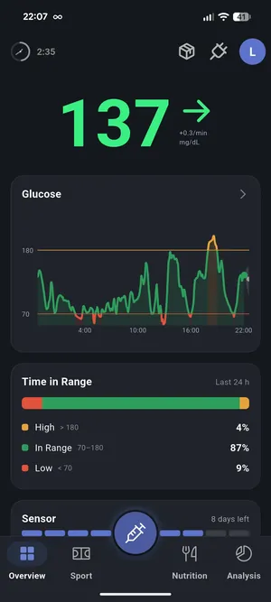

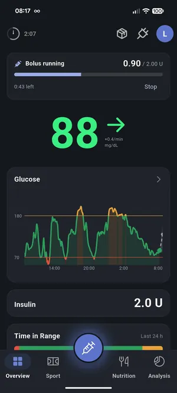

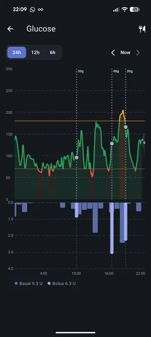

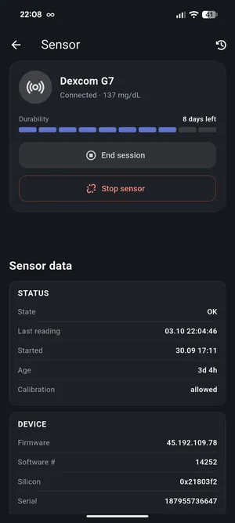

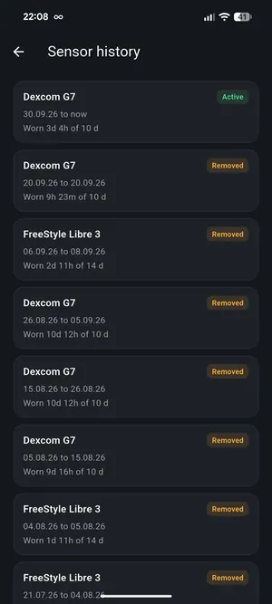

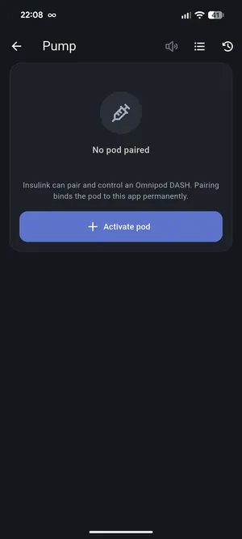

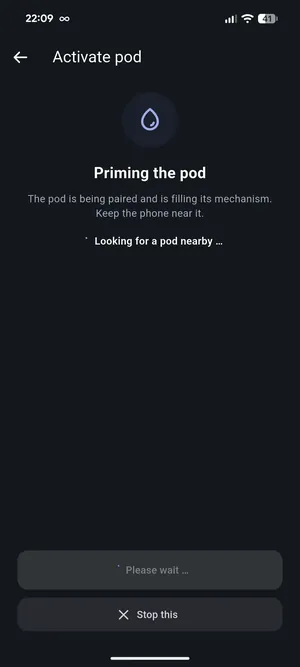

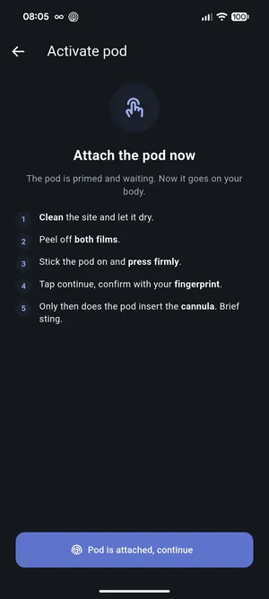

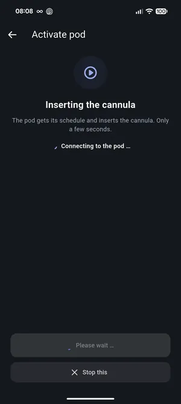

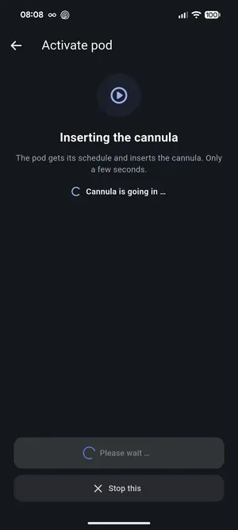

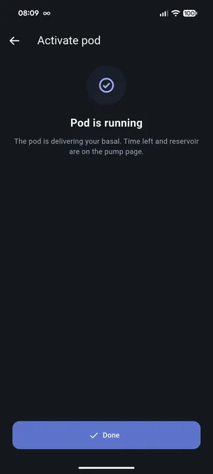

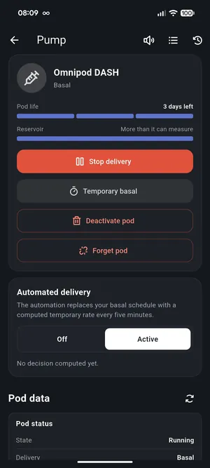

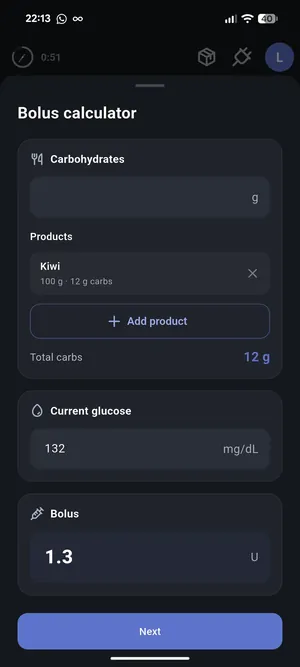

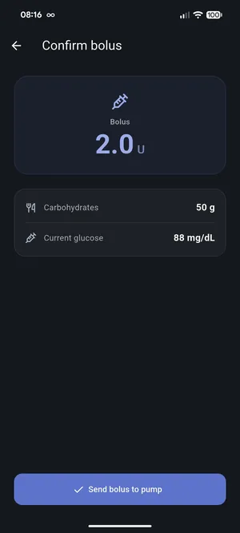

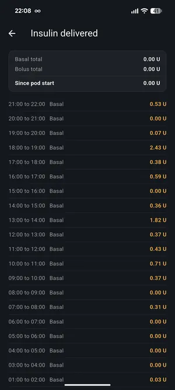

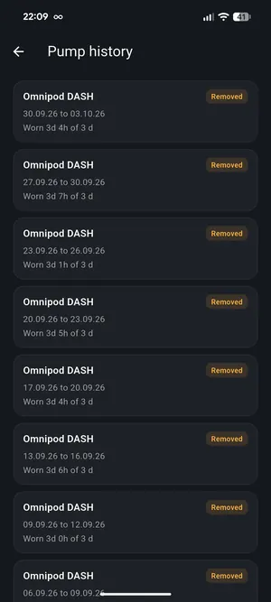

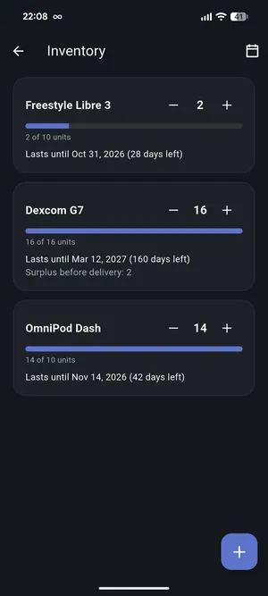

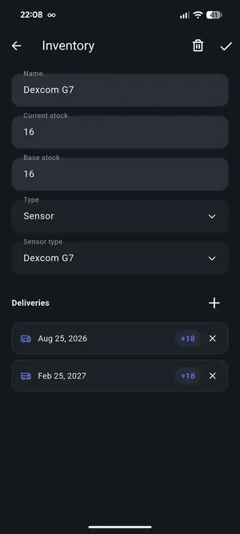

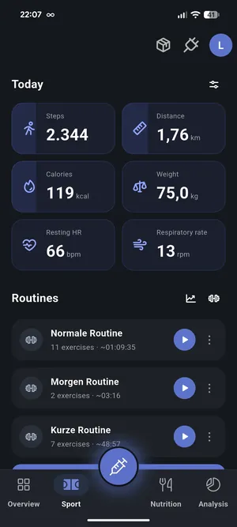

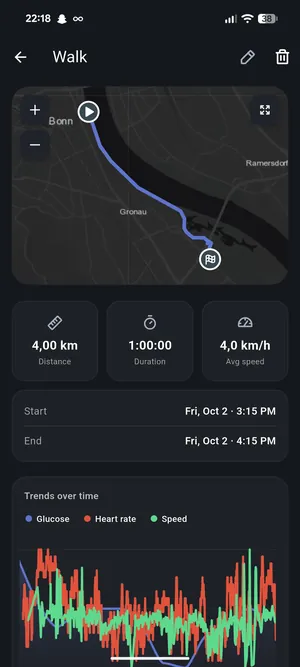

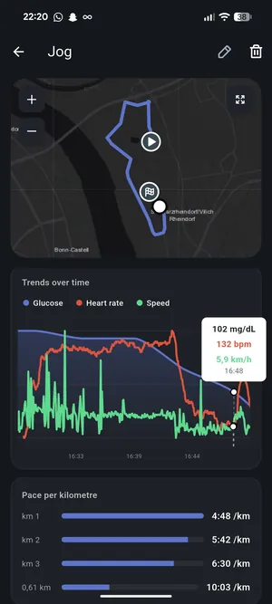

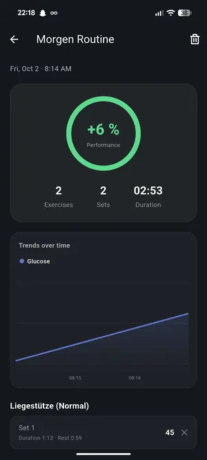

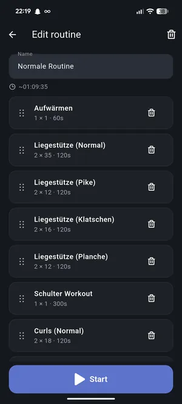

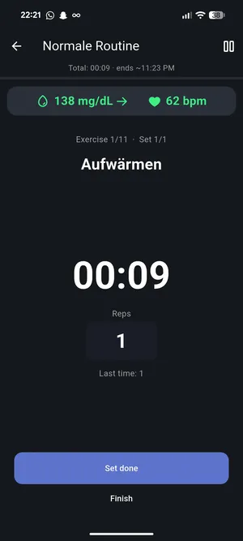

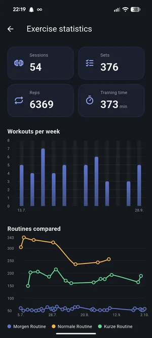

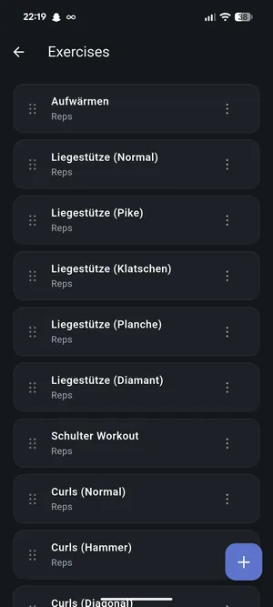

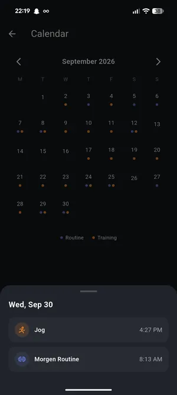

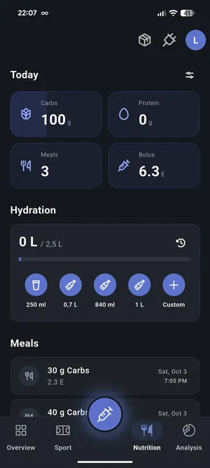

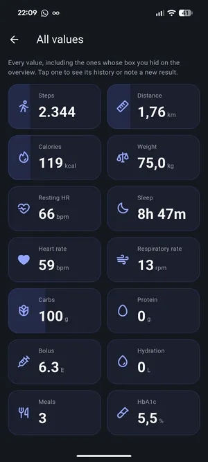

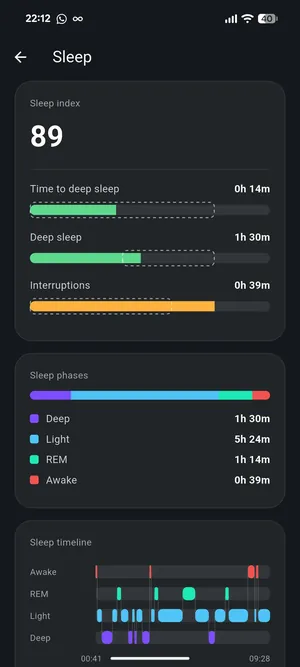

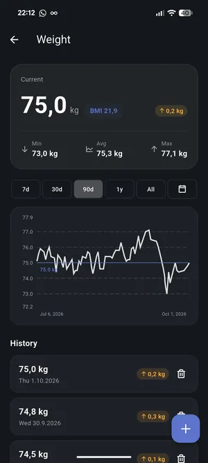

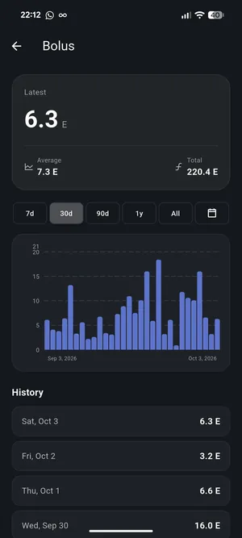

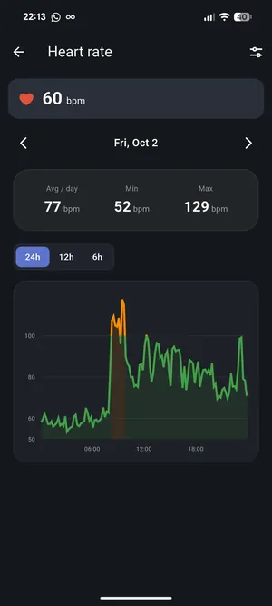

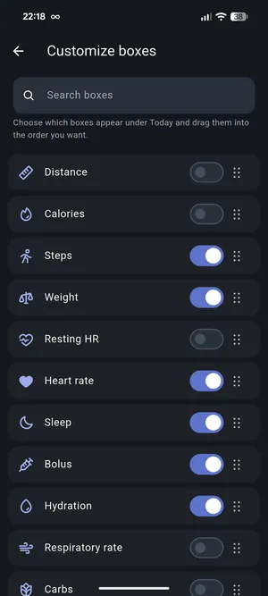

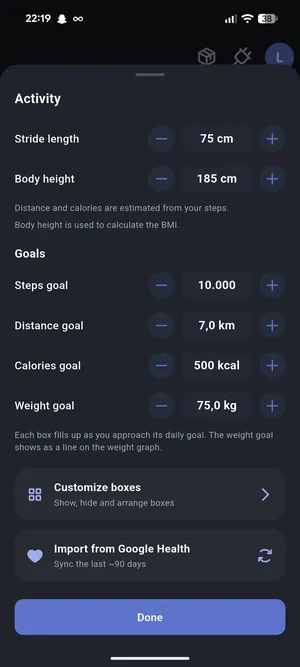

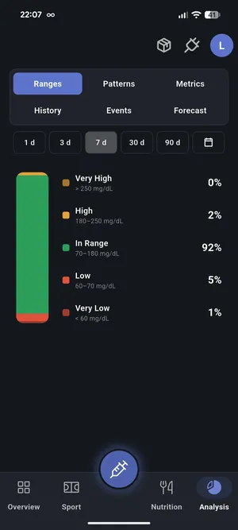

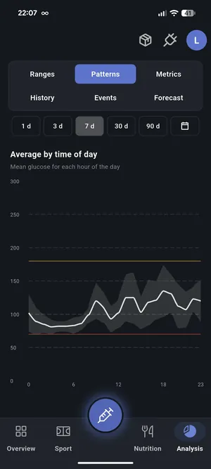

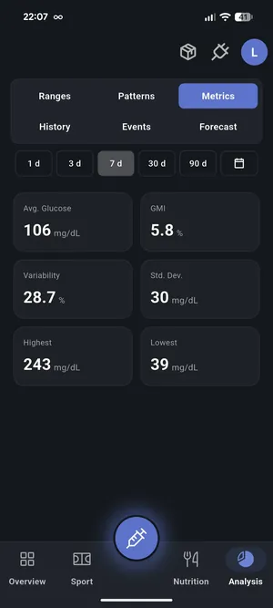

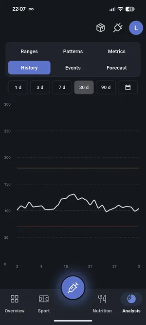

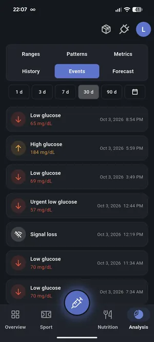

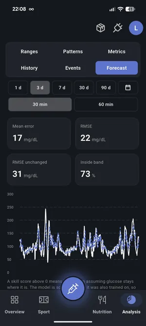

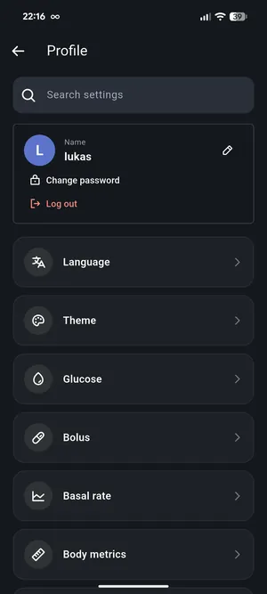

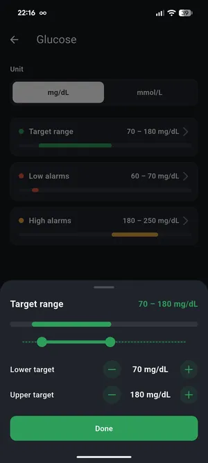

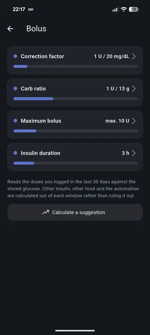

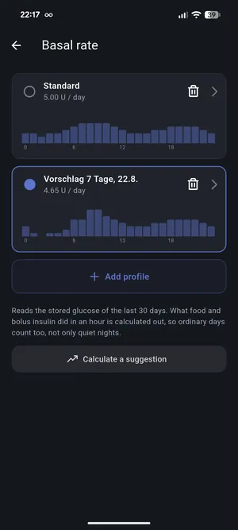

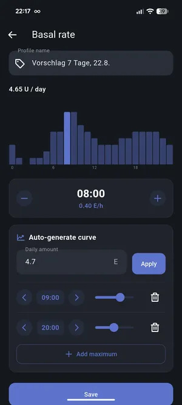

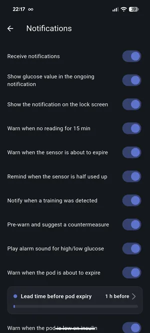

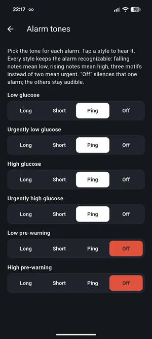

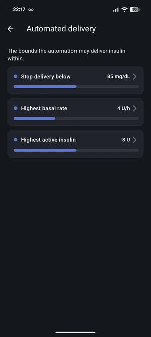
Good to know
Is Insulink a medical device?
Which sensors are supported?
Is it open source?
Is my data safe?
What does it cost?
Ready to own your data?
Sign in to your Insulink panel and see your glucose the open way.